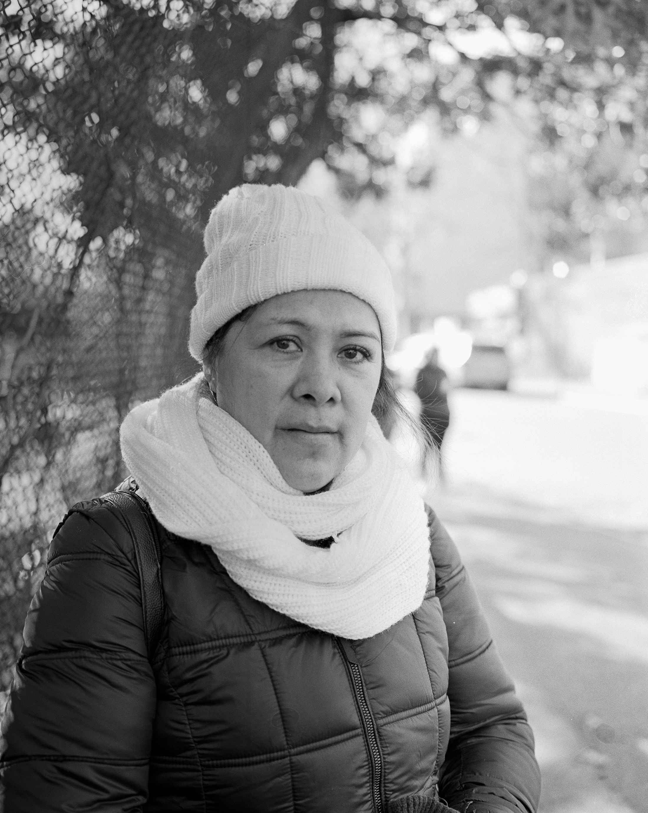

T h e W o m e n o f L a P a r a d a
A documentary photo essay captured in medium format black and white film of the women day workers who gather at the corner of Marcy and Division Avenues, otherwise known as La Parada, in South Williamsburg to be picked up for a cleaning job by members of the Hasidic community.
December 6, 2018
“One early October morning, a few dozen women are huddling at the windswept corner of Marcy Avenue and Division Avenue, above the expressway that connects Brooklyn with nearby Queens. It’s a bright sunny day, but the cold soon seeps into one’s bones. As hundreds of cars whiz by below, the women try to warm themselves, but to no avail. There are no benches, shelters, heaters, cafes or toilets at this corner – a bustling urban intersection that’s been dubbed “La Parada” (Spanish for “The Stop”), and has drawn unflattering comparisons to the notorious American slave markets of one and a half centuries ago, which were long supposed to be nonexistent."
“It’s the day after Rosh Hashanah and about 50 women arrive at La Parada between 6 and 8 A.M. Almost all are migrants from Latin America, principally Mexico and Ecuador. Not far away is a group of five workers from Poland and Russia. Women come here every day in the hope of finding cleaning jobs in the Satmar community, a Hasidic sect that was founded in 1905 by Rabbi Yoel Teitelbaum in the Transylvanian city of Satmar. After World War II, the community’s center moved to Brooklyn’s Williamsburg section. According to estimates from the past decade, more than 40,000 members of the ultra-Orthodox sect currently live in Brooklyn."


“From the outside, the cultural encounter between the Latinas and their prospective Hasidic employers looks like a scene from a theater play. A woman with a head-covering pushing a baby carriage approaches briskly. Within seconds, seven women gather around her. Their conversations are a jumble of broken languages: Spanish, Portuguese, Russian, Yiddish and also – how could it be otherwise? – English. “Doce,” one shouts in Spanish, meaning 12, the minimum hourly wage that most workers demand for house cleaning. But the Satmar woman raises both hands, showing five fingers on one, four on the other: She’s willing to pay $9 (the minimum wage in New York State). After a few minutes of bargaining, a Mexican woman in sweatpants and black sneakers starts to follow her new employer. The two soon disappear around the corner as the other women turn away."
Photographs by Caroline Willis
Text provided byHAARETZ